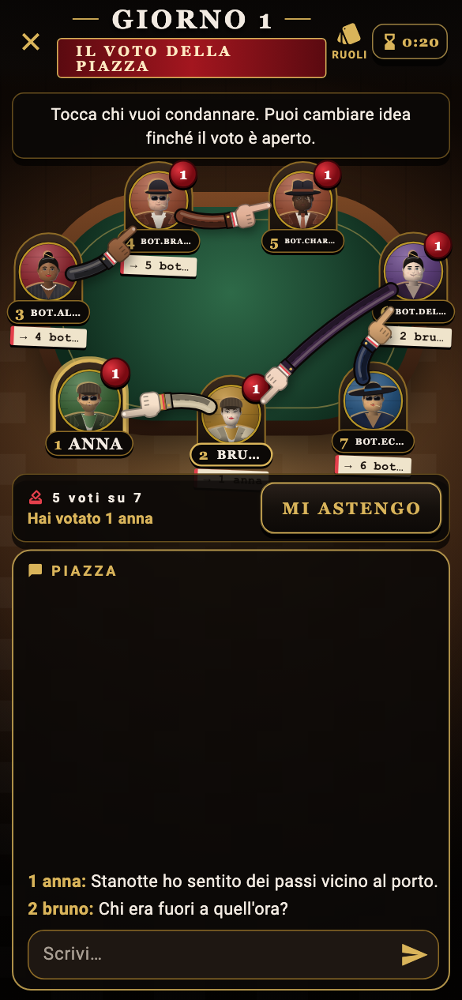
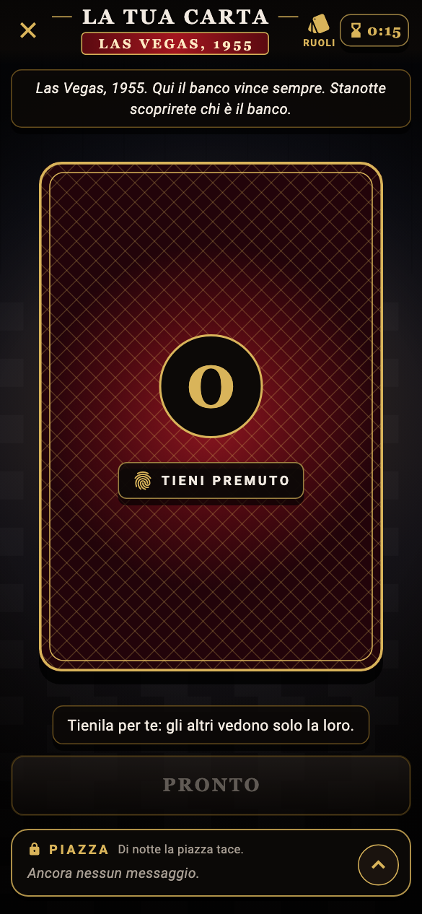

CHI SA,
TACE.
Un gioco di ruoli segreti. La piazza parla, la notte decide, all’alba il quartiere ascolta.
Fai un giro in cittàPresto su App Store, per iPhone.

Chi parla
non vede l’alba.
Una notte.
Tre atti.
La città cambia ritmo, ma nessuno resta a guardare. Tocca una fase e guarda la partita prendere forma.

La piazza parla
Alibi, accuse, mezze verità. Ogni parola può cambiare il voto.


La chat
è il tavolo.
Leggi i messaggi, guarda i voti cambiare, decidi chi mandare al rogo. Gli avatar e i numeri restano visibili mentre la partita si scalda.
Scegli il tuo posto

Ogni città
ha una storia.
Le notti diventano scene. Le albe, pagine di giornale. Il narratore cuce gli eventi della partita in una cronaca tutta sua.
Ventuno facce.
Nessuna innocente.
La famiglia si conosce e uccide di notte: Mafioso, Padrino, Sarto, Compare. La città indaga e protegge: Detective, Medico, Cecchino, Giornalista, Becchino, Guardaspalle, Reduce, Pregiudicato, Messia, Sindaco, Portinaio e gli Onesti. E poi chi gioca per sé: il Fesso, il Piromane, il Cacciatore di taglie, lo Strozzino, il Sicario.


Fatti un nome.
E una faccia.
Dal barbiere scegli viso, capelli e baffi. In bottega cappelli, completi e pacchetti interi: le monete si guadagnano solo giocando e salendo di livello. Il tuo fascicolo tiene il conto.

Stessa città.
Il tuo modo.
Un telefono per tutti.
Ci si trova attorno al tavolo e ci si passa il telefono per i ruoli e le scelte segrete. Poi si torna a guardarsi in faccia.
Ognuno dal proprio telefono.
Crea una stanza con gli amici: ciascuno segue la partita sul suo schermo e discute nella chat del quartiere.
La classificata.
Dodici sconosciuti, un tavolo. Si entra in coda, si aspetta il tavolo pieno e si gioca per il grado: ogni partita sposta il tuo nome in classifica. Chi abbandona paga.